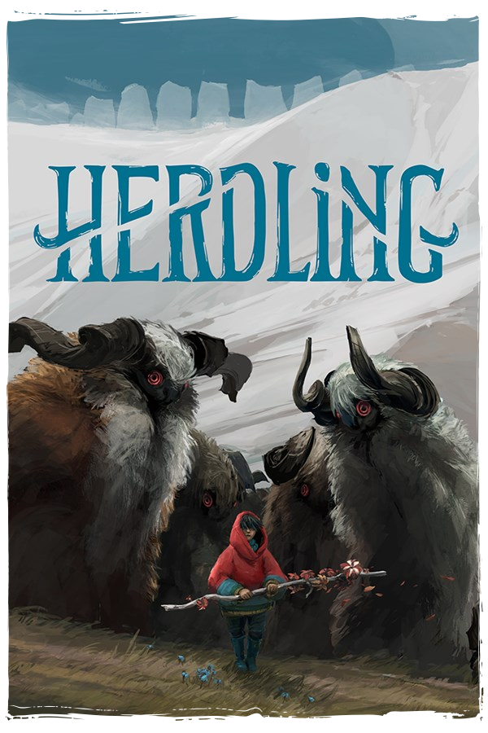

Herdling
Every archived year-end list appearance, including placement and points earned.
About the Game
Herdling is a brand new adventure from Okomotive, creators of the atmospheric and acclaimed FAR games, and Panic, publishers of Firewatch. Head out on a grand alpine expedition with a herd of loveable beasts, as you ascend a mountain path, encounter eerie dangers and surprising obstacles, and forge your way to the mystery at the summit. Features:Guide, protect, and fall in love with a motley herd of CalicornsTraverse stunning mountainscapes, fog-wreathed forests, snowy plateaus, and forgotten valleysHone your herding skills as you navigate a wide range of challenges, threats, and light environmental puzzlesFeel the rush of the mountain air alongside your herd in exhilarating stampede sequencesAn emotional, wordless tale of trust, survival, and companionship during a great crossing through a fallen world
| Released | 2025-08-21 |
|---|---|
| Developer | Okomotive |
| Publisher | Panic |
| Genres | Adventure, Casual, Indie |
| Platforms | PC, PlayStation 5, Nintendo Switch |
SingleplayerSteam AchievementsFull controller supportSteam CloudAtmosphericStory RichThird PersonFantasyExplorationFemale ProtagonistAction-AdventurePost-apocalyptic
Where to Buy
Game information provided by RAWG.
Points by Year
List History
| Year | Source | List | Placement | Points |
|---|---|---|---|---|
| 2025 | GameSpot | The Best Games Of 2025 | Unranked | 1 |